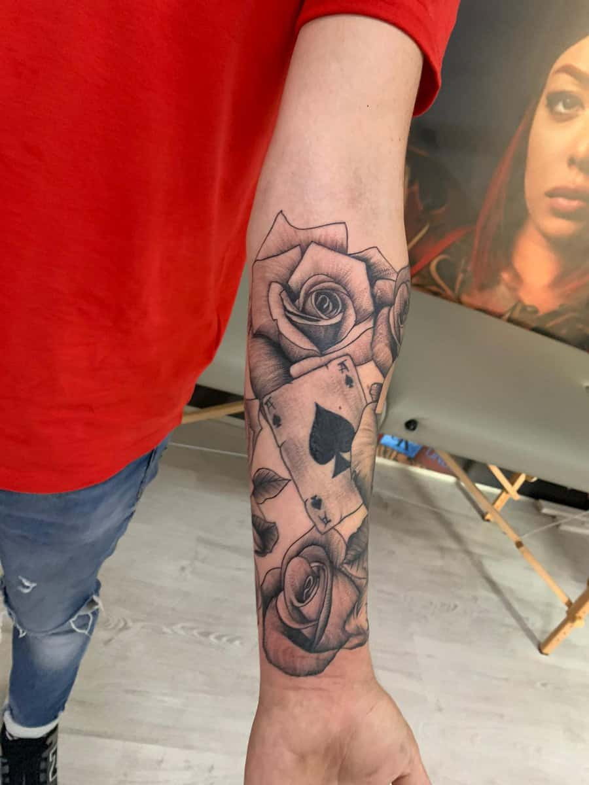
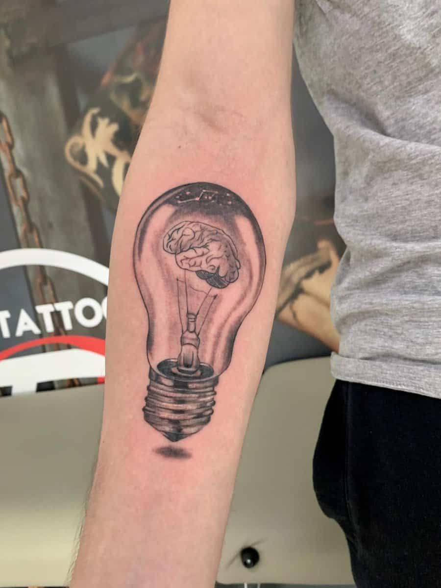

STUDIO DE TATUAJEARTĂ PERSONALĂ. PERMANENTĂ.

O IDEE A TA. O SEMNĂTURĂ A NOASTRĂ.
Poveștipe piele.
Ceva din tine.
Desenat să rămână.
01 / PORTOFOLIU PIELE. CERNEALĂ. CARACTER.
Fiecare tatuaj,
o altă poveste.
18 lucrări. 2 cadre din studio.
Din arhiva lui Cristi Nitu.
Portofoliul original.
Fotografiile salonului pot fi văzute momentan pe Instagram.Deschide portofoliul01 / 20
Folosește săgețile stânga/dreapta, trage imaginile sau glisează pe telefon. Apasă pe fotografia din față pentru a o mări.
Arhivă foto 2020 · RED TATTOO în Ora de Sibiu
02 / ARTISTULÎN SPATELE FIECĂREI LINII


DETALIUL FACE DIFERENȚA.RED TATTOO / CRISTI NITU
Un artist.
O semnătură.
Un tatuaj începe cu tine.
Împreună îi dăm formă.
Poate fi un desen clar, o imagine care nu-ți iese din minte sau ceva ce încă nu știi să explici.
Apoi vin alegerile: proporțiile, contrastul, locul pe corp. Le discutăm pe îndelete, până când desenul capătă sens pentru tine.
Spune-mi ideea taCRISTI NITU
TATTOO ARTIST
TATTOO ARTIST
03 / STIL & DIRECȚIEO IDEE. MULTE POSIBILITĂȚI.
Fiecare idee
își are limbajul.
Câteva puncte de plecare.
Direcția finală o alegem împreună.

01Black & grey
Lumină, umbră și profunzime. De la un detaliu discret la o compoziție amplă, contrastul dă formă poveștii.
Discută această direcție02Fine line
O linie fină, spațiu și echilibru. Simboluri și compoziții aerisite pentru ideile care se exprimă prin simplitate.
Discută această direcție03Custom design
Referințele sunt doar începutul. Discutăm elementele importante pentru tine și felul în care pot deveni o singură compoziție.
Discută această direcție04 / CUM ÎNCEPEMDIN IDEE ÎN TATUAJ
Întâi vorbim.
Apoi desenăm.
Nu trebuie să vii cu toate răspunsurile.
Ce ai în minte?
Trimite ideea, câteva referințe și zona în care îți dorești tatuajul. Spune-ne ce contează pentru tine în desen.
Un desen care ți se potrivește.
Discutăm direcția, dimensiunea și felul în care compoziția urmărește corpul. Fiecare alegere își are locul.
De pe hârtie, pe piele.
Stabilim detaliile ședinței. Înainte de începere discutăm poziționarea și ultimele ajustări ale desenului.
RECENZII / RED TATTOODIN EXPERIENȚELE LOR
Cuvinte care
rămân.
De la prima idee la ultimul detaliu.
Experiențele celor care ne-au trecut pragul.
5 recenzii de 5 stele, selectate din Google Maps.
CONTACT / SIBIURED TATTOO BY CRISTI NITU
Ne vedem
în studio.
O idee bună începe cu o conversație.
Sună-ne și stabilim detaliile.
TELEFON & PROGRAMĂRI0742 451 134
ADRESA SALONULUIStrada Tilișca nr. 48, bloc 4
Sibiu, România
Indicații de orientare, în Google Maps, într-o filă nouă
Sibiu, România
05 / PROGRAMĂRI & IDEIRED TATTOO BY CRISTI NITU
Următoarea poveste poate fi a ta.
Să creem
ceva.
O idee, câteva referințe și un mesaj.
Atât ne trebuie pentru început.